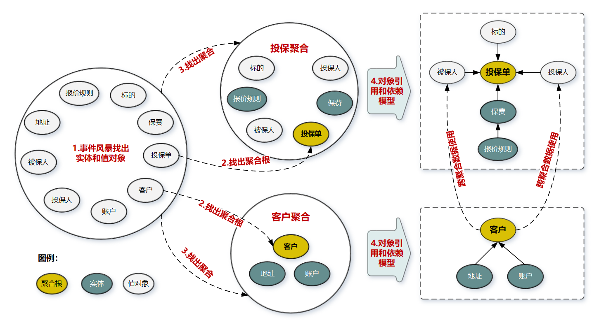

- 00 开篇词 学好了DDD，你能做什么？.md
- 01 领域驱动设计：微服务设计为什么要选择DDD.md
- 02 领域、子域、核心域、通用域和支撑域：傻傻分不清？.md
- 03 限界上下文：定义领域边界的利器
- 04 实体和值对象：从领域模型的基础单元看系统设计.md
- 05 聚合和聚合根：怎样设计聚合？.md
- 06 领域事件：解耦微服务的关键.md
- 07 DDD分层架构：有效降低层与层之间的依赖.md
- 08 微服务架构模型：几种常见模型的对比和分析.md
- 09 中台：数字转型后到底应该共享什么？.md
- 10 DDD、中台和微服务：它们是如何协作的？.md
- 11 DDD实践：如何用DDD重构中台业务模型？.md
- 12 领域建模：如何用事件风暴构建领域模型？.md
- 13 代码模型（上）：如何使用DDD设计微服务代码模型？.md
- 14 代码模型（下）：如何保证领域模型与代码模型的一致性？.md
- 15 边界：微服务的各种边界在架构演进中的作用？.md
- 16 视图：如何实现服务和数据在微服务各层的协作？.md
- 17 从后端到前端：微服务后，前端如何设计？.md
- 18 知识点串讲：基于DDD的微服务设计实例.md
- 19 总结（一）：微服务设计和拆分要坚持哪些原则？.md
- 20 总结（二）：分布式架构关键设计10问.md
- 答疑：有关3个典型问题的讲解.md
- 结束语 所谓高手，就是跨过坑和大海.md
05 聚合和聚合根：怎样设计聚合？
你好，我是欧创新。今天我们来学习聚合（Aggregate）和聚合根（AggregateRoot）。
我们先回顾下上一讲，在事件风暴中，我们会根据一些业务操作和行为找出实体（Entity）或值对象（ValueObject），进而将业务关联紧密的实体和值对象进行组合，构成聚合，再根据业务语义将多个聚合划定到同一个限界上下文（Bounded Context）中，并在限界上下文内完成领域建模。
那你知道为什么要在限界上下文和实体之间增加聚合和聚合根这两个概念吗？它们的作用是什么？怎么设计聚合？这就是我们这一讲重点要关注的问题。
聚合
在 DDD 中，实体和值对象是很基础的领域对象。实体一般对应业务对象，它具有业务属性和业务行为；而值对象主要是属性集合，对实体的状态和特征进行描述。但实体和值对象都只是个体化的对象，它们的行为表现出来的是个体的能力。
那聚合在其中起什么作用呢？
举个例子。社会是由一个个的个体组成的，象征着我们每一个人。随着社会的发展，慢慢出现了社团、机构、部门等组织，我们开始从个人变成了组织的一员，大家可以协同一致的工作，朝着一个最大的目标前进，发挥出更大的力量。
领域模型内的实体和值对象就好比个体，而能让实体和值对象协同工作的组织就是聚合，它用来确保这些领域对象在实现共同的业务逻辑时，能保证数据的一致性。
你可以这么理解，聚合就是由业务和逻辑紧密关联的实体和值对象组合而成的，聚合是数据修改和持久化的基本单元，每一个聚合对应一个仓储，实现数据的持久化。
聚合有一个聚合根和上下文边界，这个边界根据业务单一职责和高内聚原则，定义了聚合内部应该包含哪些实体和值对象，而聚合之间的边界是松耦合的。按照这种方式设计出来的微服务很自然就是“高内聚、低耦合”的。
聚合在 DDD 分层架构里属于领域层，领域层包含了多个聚合，共同实现核心业务逻辑。聚合内实体以充血模型实现个体业务能力，以及业务逻辑的高内聚。跨多个实体的业务逻辑通过领域服务来实现，跨多个聚合的业务逻辑通过应用服务来实现。比如有的业务场景需要同一个聚合的 A 和 B 两个实体来共同完成，我们就可以将这段业务逻辑用领域服务来实现；而有的业务逻辑需要聚合 C 和聚合 D 中的两个服务共同完成，这时你就可以用应用服务来组合这两个服务。
聚合根
聚合根的主要目的是为了避免由于复杂数据模型缺少统一的业务规则控制，而导致聚合、实体之间数据不一致性的问题。
传统数据模型中的每一个实体都是对等的，如果任由实体进行无控制地调用和数据修改，很可能会导致实体之间数据逻辑的不一致。而如果采用锁的方式则会增加软件的复杂度，也会降低系统的性能。
如果把聚合比作组织，那聚合根就是这个组织的负责人。聚合根也称为根实体，它不仅是实体，还是聚合的管理者。
首先它作为实体本身，拥有实体的属性和业务行为，实现自身的业务逻辑。
其次它作为聚合的管理者，在聚合内部负责协调实体和值对象按照固定的业务规则协同完成共同的业务逻辑。
最后在聚合之间，它还是聚合对外的接口人，以聚合根 ID 关联的方式接受外部任务和请求，在上下文内实现聚合之间的业务协同。也就是说，聚合之间通过聚合根 ID 关联引用，如果需要访问其它聚合的实体，就要先访问聚合根，再导航到聚合内部实体，外部对象不能直接访问聚合内实体。
怎样设计聚合？
DDD 领域建模通常采用事件风暴，它通常采用用例分析、场景分析和用户旅程分析等方法，通过头脑风暴列出所有可能的业务行为和事件，然后找出产生这些行为的领域对象，并梳理领域对象之间的关系，找出聚合根，找出与聚合根业务紧密关联的实体和值对象，再将聚合根、实体和值对象组合，构建聚合。
下面我们以保险的投保业务场景为例，看一下聚合的构建过程主要都包括哪些步骤。

**第 1 步：**采用事件风暴，根据业务行为，梳理出在投保过程中发生这些行为的所有的实体和值对象，比如投保单、标的、客户、被保人等等。
**第 2 步：**从众多实体中选出适合作为对象管理者的根实体，也就是聚合根。判断一个实体是否是聚合根，你可以结合以下场景分析：是否有独立的生命周期？是否有全局唯一 ID？是否可以创建或修改其它对象？是否有专门的模块来管这个实体。图中的聚合根分别是投保单和客户实体。
**第 3 步：**根据业务单一职责和高内聚原则，找出与聚合根关联的所有紧密依赖的实体和值对象。构建出 1 个包含聚合根（唯一）、多个实体和值对象的对象集合，这个集合就是聚合。在图中我们构建了客户和投保这两个聚合。
**第 4 步：**在聚合内根据聚合根、实体和值对象的依赖关系，画出对象的引用和依赖模型。这里我需要说明一下：投保人和被保人的数据，是通过关联客户 ID 从客户聚合中获取的，在投保聚合里它们是投保单的值对象，这些值对象的数据是客户的冗余数据，即使未来客户聚合的数据发生了变更，也不会影响投保单的值对象数据。从图中我们还可以看出实体之间的引用关系，比如在投保聚合里投保单聚合根引用了报价单实体，报价单实体则引用了报价规则子实体。
**第 5 步：**多个聚合根据业务语义和上下文一起划分到同一个限界上下文内。
这就是一个聚合诞生的完整过程了。
聚合的一些设计原则
我们不妨先看一下《实现领域驱动设计》一书中对聚合设计原则的描述，原文是有点不太好理解的，我来给你解释一下。
**1. 在一致性边界内建模真正的不变条件。**聚合用来封装真正的不变性，而不是简单地将对象组合在一起。聚合内有一套不变的业务规则，各实体和值对象按照统一的业务规则运行，实现对象数据的一致性，边界之外的任何东西都与该聚合无关，这就是聚合能实现业务高内聚的原因。
**2. 设计小聚合。**如果聚合设计得过大，聚合会因为包含过多的实体，导致实体之间的管理过于复杂，高频操作时会出现并发冲突或者数据库锁，最终导致系统可用性变差。而小聚合设计则可以降低由于业务过大导致聚合重构的可能性，让领域模型更能适应业务的变化。
**3. 通过唯一标识引用其它聚合。**聚合之间是通过关联外部聚合根 ID 的方式引用，而不是直接对象引用的方式。外部聚合的对象放在聚合边界内管理，容易导致聚合的边界不清晰，也会增加聚合之间的耦合度。
**4. 在边界之外使用最终一致性。**聚合内数据强一致性，而聚合之间数据最终一致性。在一次事务中，最多只能更改一个聚合的状态。如果一次业务操作涉及多个聚合状态的更改，应采用领域事件的方式异步修改相关的聚合，实现聚合之间的解耦（相关内容我会在领域事件部分详解）。
**5. 通过应用层实现跨聚合的服务调用。**为实现微服务内聚合之间的解耦，以及未来以聚合为单位的微服务组合和拆分，应避免跨聚合的领域服务调用和跨聚合的数据库表关联。
上面的这些原则是 DDD 的一些通用的设计原则，还是那句话：“适合自己的才是最好的。”在系统设计过程时，你一定要考虑项目的具体情况，如果面临使用的便利性、高性能要求、技术能力缺失和全局事务管理等影响因素，这些原则也并不是不能突破的，总之一切以解决实际问题为出发点。
总结
[第 04 讲] 和 [第 05 讲] 的内容，其实是有强关联的。我们不妨在这里总结下聚合、聚合根、实体和值对象它们之间的联系和区别。
**聚合的特点：**高内聚、低耦合，它是领域模型中最底层的边界，可以作为拆分微服务的最小单位，但我不建议你对微服务过度拆分。但在对性能有极致要求的场景中，聚合可以独立作为一个微服务，以满足版本的高频发布和极致的弹性伸缩能力。
一个微服务可以包含多个聚合，聚合之间的边界是微服务内天然的逻辑边界。有了这个逻辑边界，在微服务架构演进时就可以以聚合为单位进行拆分和组合了，微服务的架构演进也就不再是一件难事了。
**聚合根的特点：**聚合根是实体，有实体的特点，具有全局唯一标识，有独立的生命周期。一个聚合只有一个聚合根，聚合根在聚合内对实体和值对象采用直接对象引用的方式进行组织和协调，聚合根与聚合根之间通过 ID 关联的方式实现聚合之间的协同。
**实体的特点：**有 ID 标识，通过 ID 判断相等性，ID 在聚合内唯一即可。状态可变，它依附于聚合根，其生命周期由聚合根管理。实体一般会持久化，但与数据库持久化对象不一定是一对一的关系。实体可以引用聚合内的聚合根、实体和值对象。
**值对象的特点：**无 ID，不可变，无生命周期，用完即扔。值对象之间通过属性值判断相等性。它的核心本质是值，是一组概念完整的属性组成的集合，用于描述实体的状态和特征。值对象尽量只引用值对象。